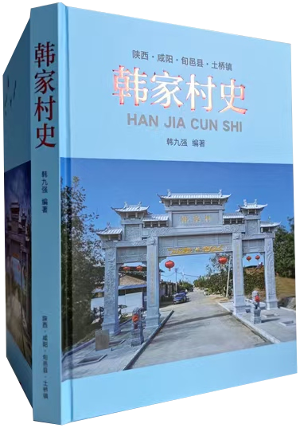
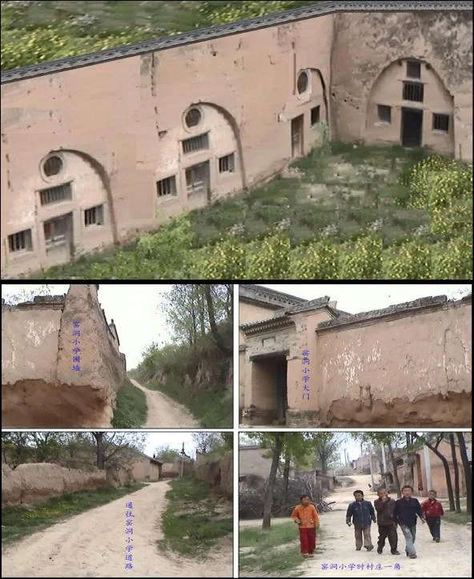

THE VILLAGE CHRONICLE · 村史精选
故土有记，文脉有承。
一座村庄的历史，不只在年代与名字里，也在一纸契约、一间教室和一代代人的生活中。以下选取村史中与村庄文化相关的内容，邀你循着文字认识韩家村。
黄土高原上的韩家
韩家村现属陕西省旬邑县土桥镇，由韩家与韩家堡子合并而成。书中记述，村庄西邻王牌、东邻新店、北有牛家，南与丈八寺及太慈村的沟壑相接。历史上，这里的村民以农耕为生，也始终珍视读书求知。
出处：第一章“村史简介述韩家”，书内第 1—2 页，PDF 第 24—25 页。
韩家村是什么时候建村的？
村史前言引用《旬邑县志》，记载明崇祯十五年（1642）建村。第一章又引用 2007 年版《咸阳大辞典》，收录韩家相传唐初建村、韩家堡子相传唐末得名的说法。
这些材料并非完全一致。作者在后续章节中结合契约、村貌和口述材料进行研究与推论。本网站保留“记载”“相传”和“推论”的区别，不据此认定更早的确切建村年代。
出处：前言书内第（5）页；第一章第 1 页；第二章第 10—11 页；第三章传说之问相关讨论。
纸上契约，让往事有迹可循
村史研究的重要材料，是村民家族保存的买卖契约和兄弟分家合约。在作者记述中，韩秉云先生先提供了 46 份家书契约，随后其他家族也陆续拿出珍藏的文书。这些资料帮助研究者辨认祖辈姓名，追寻宗族关系，也了解旧时的生产与生活。
契约中的“搭庄”，指农户在农具、人力、畜力不足时彼此合作，从耕地、收割、打碾到入仓互补所需。一个旧词，留下了乡邻协作的生活智慧。
出处：第三章“历史契约资料征集”“契约资料研究分析案例”，书内第 19—21 页，PDF 第 42—44 页。书中征集总量与分析样本数量口径不同，本站不将其混用。
窑洞里的读书声

窑洞小学是村庄教育记忆的重要标志。村史中的诗句写下了孩子们在艰苦条件下求学的情景：“窑洞光线仍暗淡，春夏秋冬油灯伴”“再苦也要把书念，努力奋斗不间断”。
从窑洞小学走出的学子，后来活跃在教育、医疗、行政、工程、工商等领域。书中对这些经历的记述，寄托着对求知、实干与担当的珍视。2023 年的窑洞小学联谊，也让当年的同窗再聚故乡。
出处：第六章“韩家村窑洞小学印记”，书内第 169—171 页；“感慨歌赋赞韩家”《窑洞小学》，第 319 页。
乡风藏在寻常日子里
晨扫庭院：对生活的认真
书中回忆，村里有清晨打扫大门外街道的习惯，柴草与各类物具的收置也讲究整齐。院落与街道的清洁，成为日常生活中可见的乡风。
待客尊长：席间自有礼数
村史记录了当地传统的待客礼仪，包括桌椅摆放、饭菜上席、入席与座次等要求。先长辈、后晚辈的礼序，体现着对长者与宾客的尊重。这是书中记录的传统民俗，不表示今天所有家庭均以相同方式实践。
乡邻相助：一村人的守望
村中婚丧大事，乡亲共同出力，既有器具与住宿安排上的互助，也有对邻里困难的照应。这些生活细节，构成了村庄共同体的温度。
出处：第六章“韩家村风俗文化活动”，书内第 179—181 页，PDF 第 202—204 页。
从旧院落走向新村庄
第五章通过住宅分布图、旧村照片与鸟瞰图梳理村容变化。囤庄 24 院、老门上、城根底、庙背后等地名，留存了旧村生活的空间记忆；新农村的建设，则让村庄在新的时代继续生长。

出处：第五章“村貌变迁追韩家”，书内第 142—165 页，PDF 第 165—188 页。
资料与出处
主要文献：韩九强编著《韩家村史》，由网站委托方提供 PDF，共 348 个文件页面。下列“书内页码”对应书页印刷页码；“PDF 页码”按文件首页为第 1 页计数。
| 主题 | 书内页码 | PDF 页码 |
|---|---|---|
| 编修缘起、年代记载 | （5）—（7） | 12—14 |
| 村庄概况 | 1—2 | 24—25 |
| 来源传说、牌楼楹联 | 10—14 | 33—37 |
| 契约征集、“搭庄” | 19—21 | 42—44 |
| 村貌、旧院、新村影像 | 142—165 | 165—188 |
| 窑洞小学 | 169—171 | 192—194 |
| 乡风民俗 | 179—181 | 202—204 |
| 2023 年联谊回忆 | 319 | 342 |
首页活动照片由网站委托方提供。照片标题仅描述可见场景；未依据人像推定姓名、身份或活动日期。窑洞小学与鸟瞰影像取自上述村史；阅读区展示委托方提供的《韩家村史》实物照片。Logo 为本项目原创设计，以错落屋檐、方窗与交笔组成“双檐书印”，作为网站视觉标识。
本站摘编以文化展示为目的。完整村史包含族谱与个人信息，未作为公开下载文件发布。资料版权归原作者及相应权利人所有。
回到韩家村首页